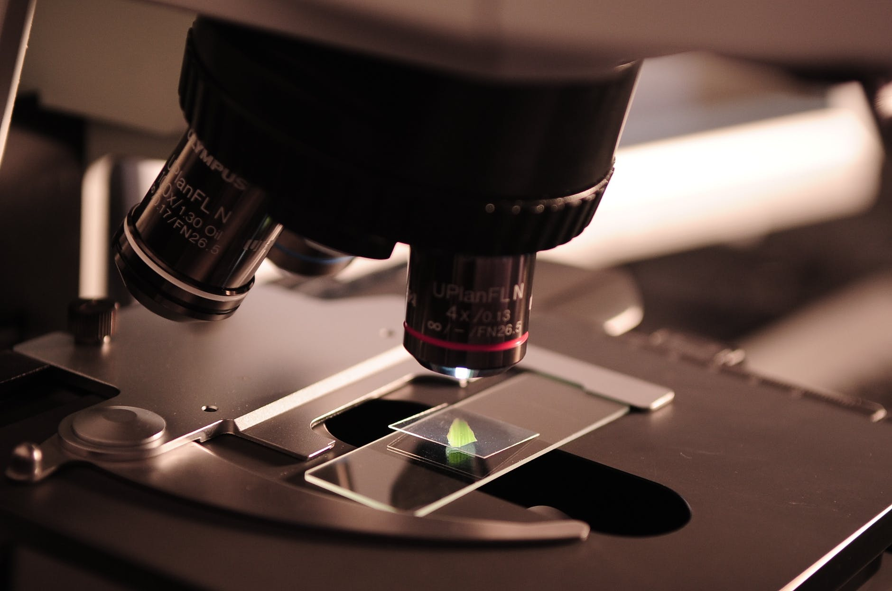

视觉稳定性之谜
，我们把我们的眼睛每秒几次。这些快速眼球运动，称为扫视，在视网膜上产生大的图像移动 - 使我们的视觉系统努力保持稳定的感性世界。重映射该视网膜图像补偿;然而，在实际的眼球运动错误导致图像的变化，即使重新映射。
要做到这一点，我们的眼睛使用名为排量（SSD）的扫视抑制过程扫视期间降低灵敏度，以视觉刺激的位移。然而，SSD仍然是一个谜给研究人员。一个研究小组在电气通信，聪教授诗织，带动东北大学的研究所调查潜在SSD的机制。
在他们的心理实验中，观察者第一盯着的固定点500和1300ms之间的随机持续时间。注视点消失后，观察者不得不向自己的目光在显示屏的另一端转移到目标盘。观察者的眼扫视运动（约500毫秒），在目标盘略微移动了它的位置，和观察者被要求判定目标盘移位（或左或右）的方向。研究人员改变目标光盘对比，前后分别扫视运动后，以操纵视网膜输入强度。此外，他们还分析了观测的精度在每对比度检测位移。
有趣的是，结果显示这告诉我们大约两个视觉通路的参与两种截然不同的反差效果。在预扫视刺激更高的对比度增强的观察者的灵敏度来检测视觉运动，这是对视力的典型的对比效果。然而，发现相对的对比效果为后扫视视觉刺激：更高的对比度导致了较低的检测灵敏度。细小途径和木兰途径：该研究小组使用的模型，其中包括早期视力两大途径成功地解释了结果。在此模型中，在木兰途径的信号是负责检测，而在横跨扫视的细小途径抑制错误的运动信息的信号的位移。 SSD时发生扫视运动后立即细小途径信号抑制Magno的途径的信号。
认识神秘的现象，整个扫视视觉稳定性，将有助于未来的AI /机器人和我们一样去感知世界。
资源 Tohoku University. "The mystery of visual stability." ScienceDaily. ScienceDaily, 11 June 2020. <www.sciencedaily.com/releases/2020/06/200611094213.htm>.Adrian Ng
Scientific Turk的中英文翻译